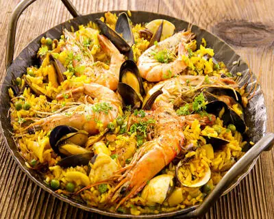
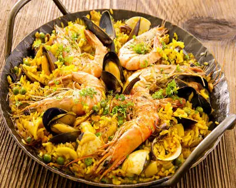

Edito:
Hello world, je m'appelle donc
Jean-Charles ou JC pour ceux qui préferent. Après plus de vingt ans passés
dans le domaine des essais automobiles.
Où j'ai eu l'occasion d'encadrer des "conducteurs essayeurs", et où j'étais chargé de veiller à
l'application de procédures techniques et
sécurité. Je devais faire le lien entre la demande client et les équipes. Le secteur a été touché par la
crise covid et les changements venus
avec les vehicules électriques. Résultat la société a été liquidée et moi licencié. Depuis un certain temps
je m'interessais au secteur du numérique
et du web, mais sans jamais avoir le temps de m'y lancer. Du coup, je tente de transformer ce qui m'arrive,
en opportunité de reconversion.
J'ai donc commencé cette formation de developpeur web, en espérant qu'elle me permette d'intégrer ce secteur
plein de promesses.
Je commence par les bases bien sûr: Html, css, js. J'apprends aussi surtout à me documenter, à rechercher
les solutions dont j'ai besoin.
Car j'aime la part d'autonomie et d'autogestion que cette activité exige.


 
